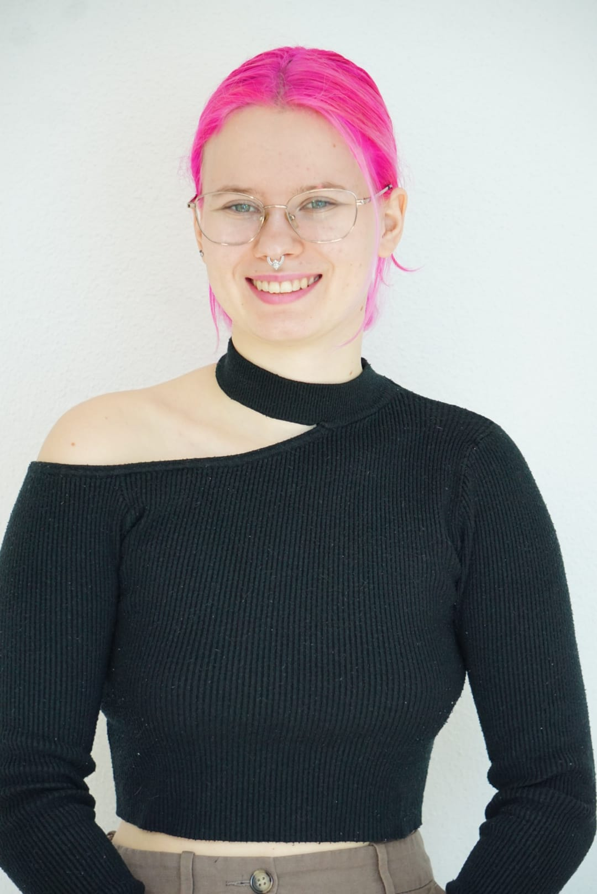

I am a Swiss based artist and designer whose work explores the intersection of media art and digital humanities. Currently studying Data Design + Art, I critically examine the digital world, aiming to demystify complex technological systems and make them more accessible to a broader audience. I am particularly interested in hardware electronics, virtual & augmented reality, artificial intelligence, game design and robotics.
Git: @chaotic-alien